CLUTTER CUP / ХУДОЖЕСТВЕННАЯ СДАЧА 01
Маленькая машина в большой кухне
Пакет breakfast-pbr-01 · реальные кадры игры. Корзинка, керамика, ручной миксер, сиденье и Мира; первые три сектора согласованного маршрута.
Открыть игру · Standard · Light
Это образец на художественную оценку. Высокое крепление миксера и широкая колея сохранены по физическому контракту; строго спереди миксер перекрывает лицо. Капсула водителя выше сидячей модели на .96u. Семь поздних секторов остаются черновыми. Настоящий телефон не тестировался.
Машина в гараже
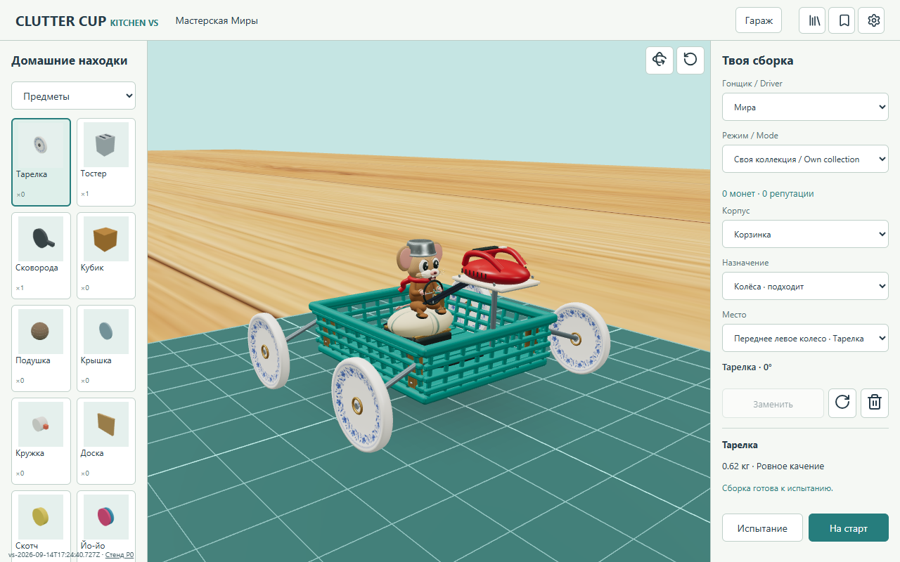
Вся сборка — игровая камера гаража · оригинал по нажатию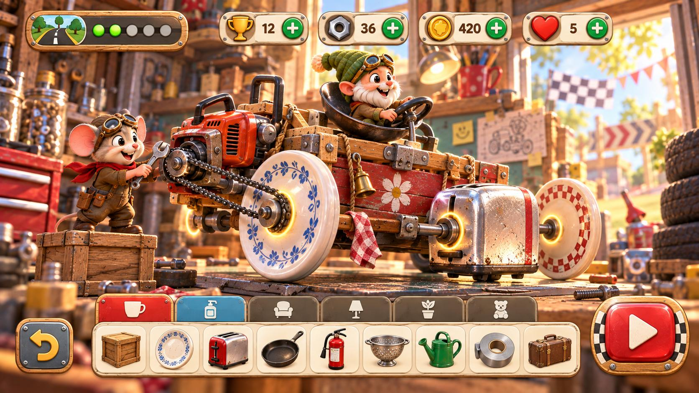
Референс форм и материалов · оригинал по нажатиюТри непрерывных сектора
Мебель принадлежит одной кухне. Дерево, ткань, глазурь, пластик и металл получают разные PBR-поверхности. Физическая дорога и камера сохранены.
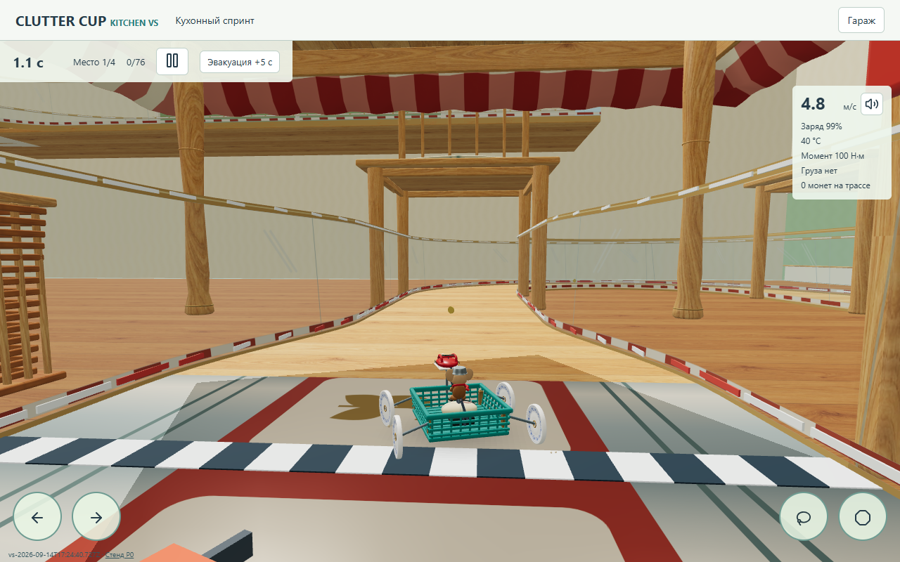
Под скатертью · оригинал по нажатию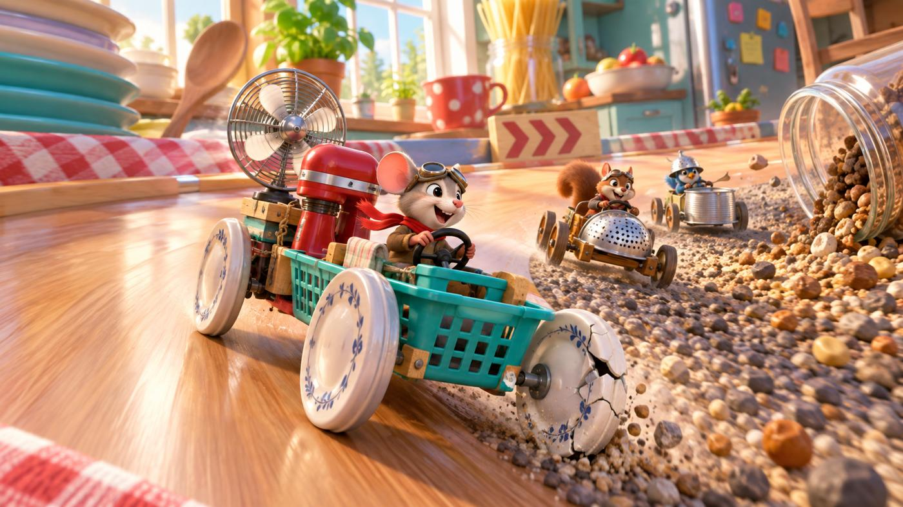
Кухонный референс: цвет, дерево, посуда, масштаб · оригинал по нажатию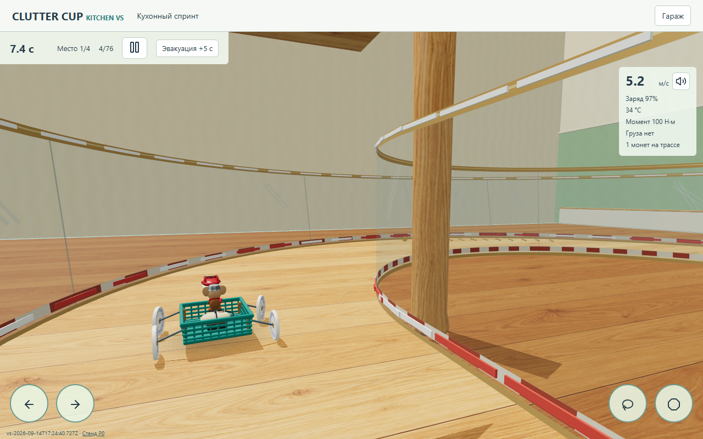
Между стульями · оригинал по нажатиюКухонный референс: цвет, дерево, посуда, масштаб · оригинал по нажатию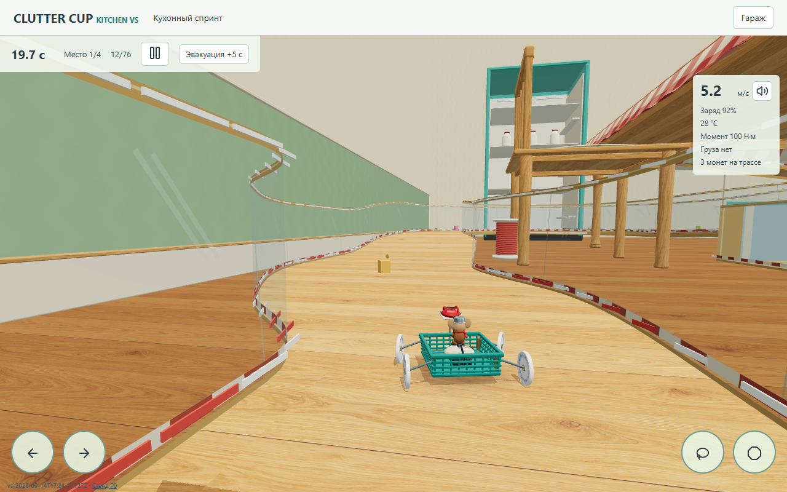
Вдоль плинтуса · оригинал по нажатиюКухонный референс: цвет, дерево, посуда, масштаб · оригинал по нажатию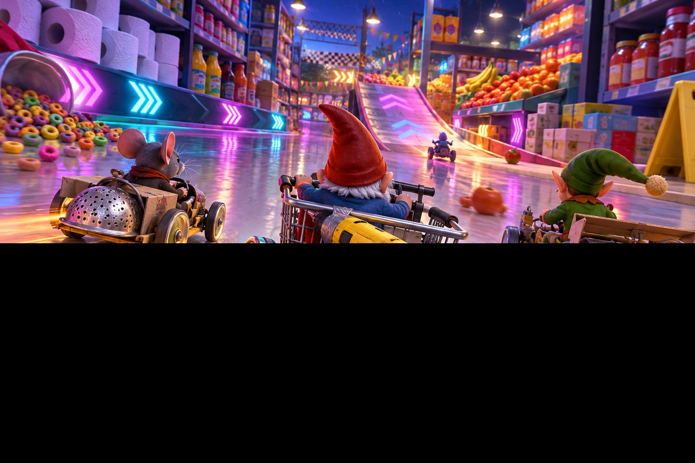
Аркадная композиция референса; нижняя часть исходника повреждена · оригинал по нажатию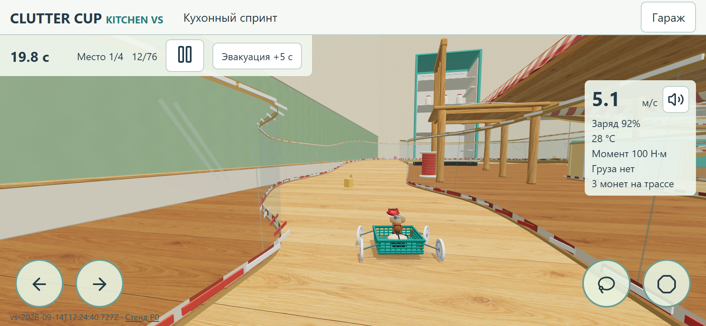
Обычный мобильный игровой ракурс, DPR 2 · оригинал по нажатиюНепрерывный проезд
Standard, 1280×800. Полный маршрут: 120,27 игровых секунды, 76 checkpoints, 0 эвакуаций. Длительность файла 225,84 с (захват и нагрузка браузера длиннее игрового таймера). Запись без ускорения; автопилот использует обычные руль и тормоз. Первые три сектора — художественный образец, остальная часть показана для проверки совместимости.
До / после, одинаковая стартовая камера
Standard / Light в исходном разрешении
Desktop 1280×800, mobile 844×390 CSS / 1688×780 screenshot. Эмуляция viewport на том же компьютере. Нажмите кадр для оригинала.
desktop · standard · garage · оригинал по нажатию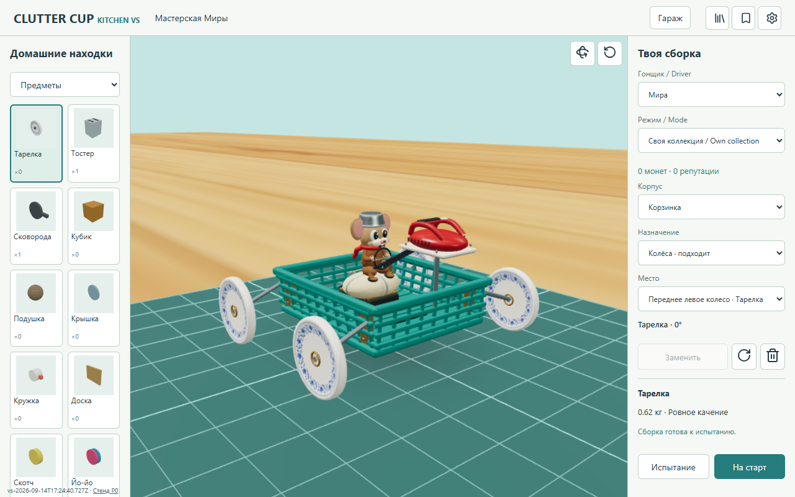
desktop · light · garage · оригинал по нажатию desktop · standard · start · оригинал по нажатию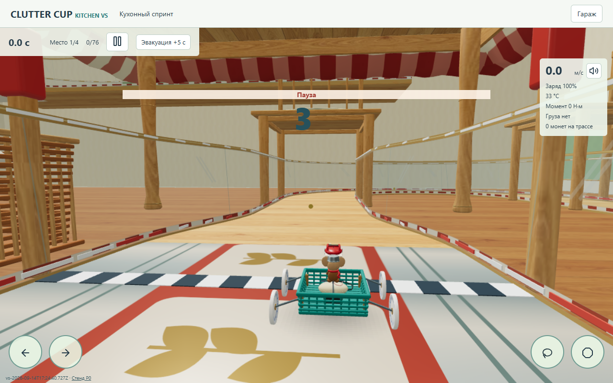
desktop · light · start · оригинал по нажатию mobile · standard · garage · оригинал по нажатию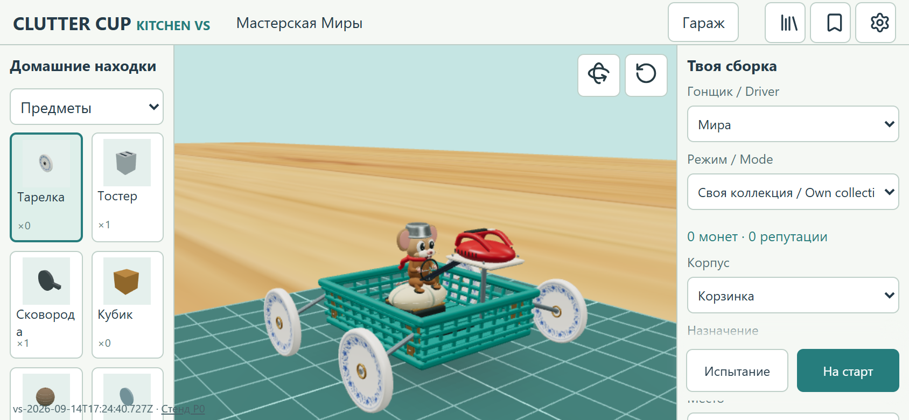
mobile · light · garage · оригинал по нажатию Измерения кадра
Одинаковый неподвижный старт; уникальные реальные render frameNumber, не частота RAF. Короткая выборка на Windows/Chromium D3D11. Standard p95 вырос до 45,6 ms; Light около 36 ms. Это не доказательство 60 fps или производительности телефона.
Повреждение, выпадение, эвакуация
Настоящее падение тестовой сцены: повреждение передних и отрыв задних тарелок, выпадение Миры, приземление, эвакуация и возврат в гараж. Пять переустановок: 9 → 9 экземпляров, ошибок загрузки нет.
Что пока отличается от референса
Пропорции привязаны к принятой физике: миксер высокий, колея широкая. Референс богаче по рисованной светотени и композиции; текущая сцена светлее и проще. Анимация лица/головы сдержанная, полноценной анимации приземления нет. Видны высокие прозрачные ограждения, локально — ступени теней. Перенос физического крепления миксера предложен разработчику отдельно; не применён.
Новые GLB и процедурные карты созданы для проекта; два исходника цвета (дуб и кобальтовый орнамент) сгенерированы OpenAI ImageGen. Авторинг и приватные отчёты не публикуются. Коммит этой публичной сборки; build ID отображается в игре.